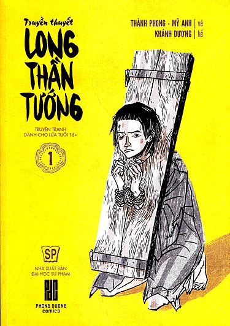
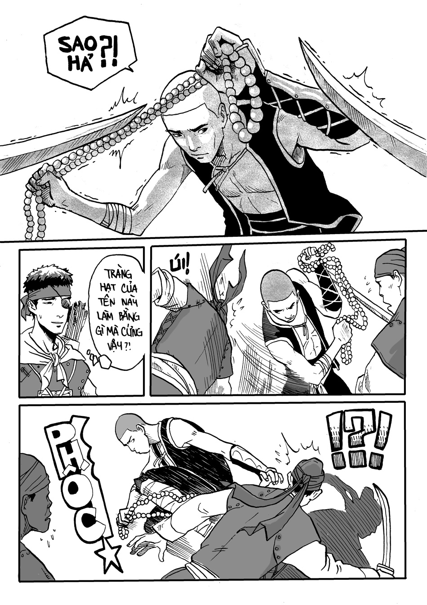
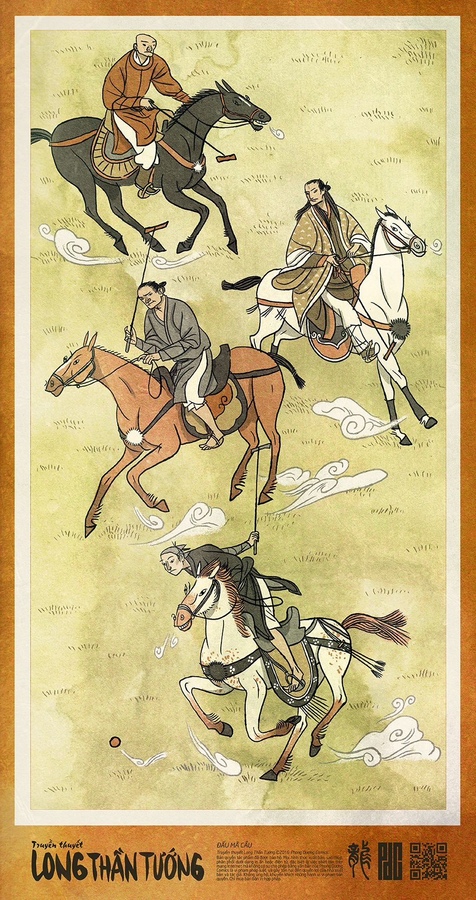
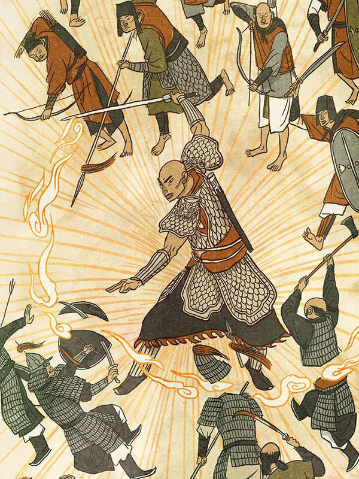

Lịch sử được kể bằng một câu chuyện có sức hút
Long Thần Tướng lấy bối cảnh Đại Việt trước cuộc kháng chiến chống quân Nguyên Mông lần thứ hai năm 1285. Thay vì tái hiện lịch sử theo dạng tư liệu, tác phẩm xây dựng một câu chuyện dã sử với các nhân vật hư cấu như Long, Lan, Kiên, Chóe… bên cạnh những nhân vật lịch sử.
Cách tiếp cận này giúp lịch sử trở nên gần với trải nghiệm đọc truyện tranh hơn. Độc giả vừa theo dõi câu chuyện của nhân vật, vừa dần nhận ra những sự kiện và nhân vật có thật phía sau.
Điểm đáng chú ý là tác phẩm không cố biến mọi chi tiết thành bài học lịch sử. Nó sử dụng lịch sử như nền móng để xây dựng một thế giới có bí ẩn, xung đột và những câu hỏi khiến người đọc muốn tiếp tục khám phá.

Hư cấu nhưng không tùy tiện với lịch sử
Long là nhân vật được xây dựng từ trí tưởng tượng của nhóm tác giả, trong khi câu chuyện đặt nhân vật này giữa những biến động có thật của Đại Việt thời Trần. Sự kết hợp ấy tạo ra khoảng trống để tác giả tự do phát triển cốt truyện mà vẫn giữ được cảm giác về một thời đại lịch sử cụ thể.
Phần lịch sử cũng được chăm chút ở nhiều chi tiết đời sống. Trang phục, kiểu tóc, tục nhuộm răng đen, ngôn ngữ và sinh hoạt của người Việt được nhóm tác giả tham khảo từ các nghiên cứu lịch sử, với sự cố vấn của nhà nghiên cứu Trần Quang Đức.
Nhờ vậy, yếu tố hư cấu không làm lịch sử trở nên xa lạ. Ngược lại, những nhân vật tưởng tượng trở thành cầu nối giúp độc giả bước vào một giai đoạn lịch sử mà không cần bắt đầu từ những kiến thức khô cứng.

Hai tuyến thời gian tạo nên điểm riêng
Một trong những lựa chọn kể chuyện đáng chú ý của Long Thần Tướng là việc đan xen tuyến quá khứ với hiện tại. Những bí ẩn của lịch sử được hé lộ từng phần thay vì được giải thích ngay từ đầu.
Cách kể này tạo cảm giác giống một câu chuyện trinh thám. Mỗi chi tiết ở hiện tại có thể trở thành manh mối để người đọc hiểu thêm về những gì đã xảy ra trong quá khứ.
Tuy nhiên, việc chuyển đổi giữa hai mạch thời gian cũng khiến người đọc phải tập trung hơn. Với những ai quen với truyện lịch sử kể tuyến tính, cách xây dựng này có thể mất một khoảng thời gian để làm quen.
Nét vẽ mộc mạc nhưng có chủ ý
Long Thần Tướng không lựa chọn phong cách minh họa quá cầu kỳ. Thành Phong và Mỹ Anh sử dụng lối tạo hình tương đối ước lệ, kết hợp màu nước thủ công để tạo cảm giác mộc mạc và phù hợp với không khí lịch sử của tác phẩm.
Điểm đáng giá của phần hình ảnh nằm ở việc nó phục vụ thế giới truyện. Những trang phục, kiến trúc và đặc điểm ngoại hình được đưa vào không chỉ để tạo cảm giác “cổ trang”, mà góp phần tái hiện đời sống người Việt thời Trần.
Phong cách này cũng từng gây ra những ý kiến trái chiều khi tác phẩm mới ra mắt. Chính nhóm thực hiện thừa nhận đây là một lựa chọn mạo hiểm, nhưng xem sự thay đổi về nét vẽ và cách thể hiện là bước tiến cần thiết cho phiên bản mới.
Khi nhân vật hư cấu đứng cạnh những nhân vật có thật
Một điểm thú vị của Long Thần Tướng là cách tác phẩm để nhân vật hư cấu tương tác với những nhân vật lịch sử. Những cái tên như Trần Nhân Tông, Trần Quốc Tuấn hay Trần Ích Tắc xuất hiện trong cùng một thế giới với các nhân vật do tác giả sáng tạo.
Điều này tạo ra cảm giác lịch sử đang diễn ra trước mắt thay vì chỉ được kể lại. Nhân vật hư cấu trở thành góc nhìn để độc giả tiếp cận những biến động lớn hơn của thời đại.
Tuy vậy, đây cũng là điểm đòi hỏi người đọc phân biệt rõ giữa sự kiện lịch sử và phần sáng tạo của tác giả. Long Thần Tướng là truyện dã sử, vì vậy giá trị của tác phẩm nằm ở cách nó kể và tái hiện lịch sử bằng ngôn ngữ truyện tranh, không phải thay thế cho tài liệu lịch sử.

Một cách tiếp cận lịch sử đáng thử
Điểm đáng nhớ của Long Thần Tướng nằm ở việc tác phẩm không lựa chọn giữa lịch sử và giải trí. Những chất liệu có thật tạo nền cho câu chuyện, trong khi nhân vật hư cấu, bí ẩn và cách kể hai tuyến giúp tác phẩm giữ được nhịp của một bộ truyện tranh.
Phần hình ảnh cũng góp phần tạo nên bản sắc riêng. Từ phong tục, trang phục đến không gian sinh hoạt, nhiều chi tiết được đưa vào với sự nghiên cứu thay vì chỉ sử dụng hình ảnh quen thuộc của truyện cổ trang.
Với độc giả muốn tìm một bộ truyện tranh Việt khai thác lịch sử theo cách hiện đại, Long Thần Tướng là một tác phẩm đáng chú ý. Bộ truyện từng nhận Giải Bạc tại International Manga Award lần thứ 9, đồng thời tạo dấu ấn với hình thức gây quỹ cộng đồng ngay từ quá trình xuất bản.